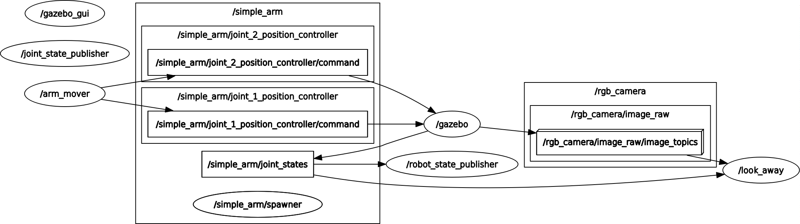

TreeviewCopyright © aleen42 all right reserved, powered by aleen42
Write ROS Nodes
What this program does
Whenever the camera is pointed towards an uninteresting image - in this case, an image with uniform color - the callback function will request a safe_move service to safely move the arm to something more interesting.
Graph
